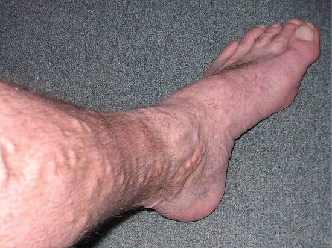
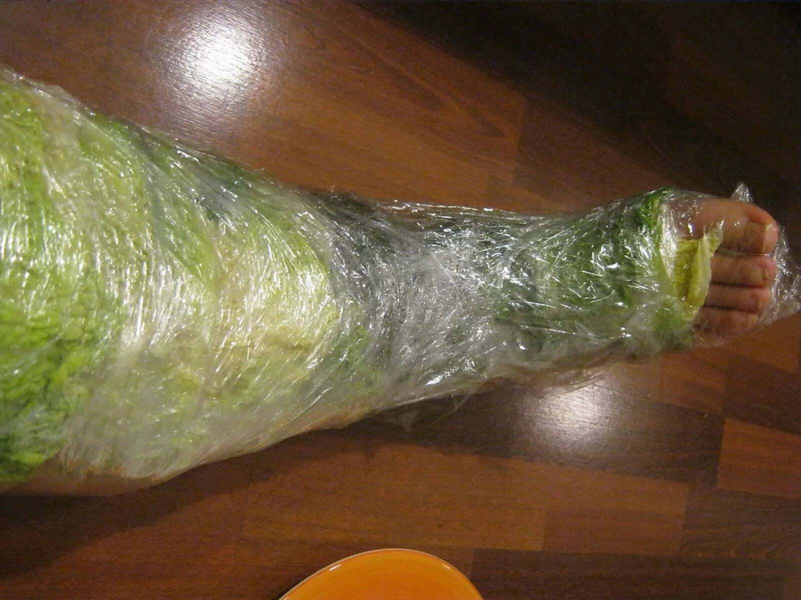
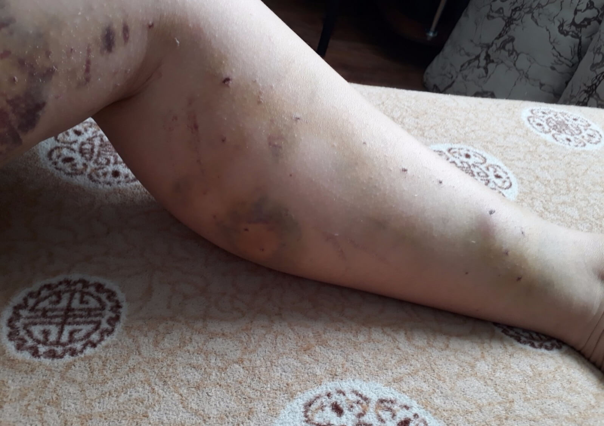
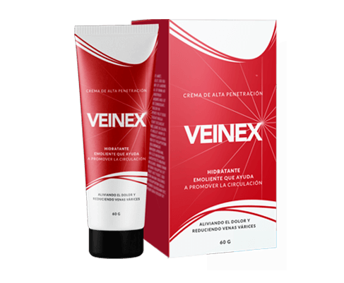

Método de tratamiento de varices sin cirugía y remedios caseros
¡Varices me deprimieron! Siempre pensé que solo las mujeres lo sufrían. Luché con ellas usando todos los métodos disponibles para el hombre común, incluso llegué a cirugía. Pero de las venas varicosas me salvó otra cosa, se lo contaré en adelante.
Sobre mí y las venas varicosas
Toda mi vida trabajé como un maldito mientras la salud me lo permitía. A los 40 años ya había conseguido una hernia, un departamento de una habitación y un auto de segunda mano. Luego decidí subir más en la lista de las personas más ricas del planeta: comencé a trabajar para mí mismo y me dediqué a las reformas de departamentos. Trabajaba, el negocio iba poco a poco mejorando hasta que comenzaron los problemas con las piernas.
Comenzaron a hincharse, cansarse durante varias horas de trabajo y temblaban por la noche como si me hubieran arrojado un cable de 220 voltios. Las venas comenzaron a sobresalir y aparecieron las arañas. La respuesta a la pregunta '¿qué demonios es?' me dio Internet: varices. Pero ni diablo borracho sabría qué hacer. Unos escriben que hay que acudir urgentemente al médico, luego aquellos que ya estaban en el médico dicen que el tratamiento no ayuda. Eligí probar los métodos populares.
Nos tratamos en casa
Como un tonto en unos días usé toda la miel que estaba en casa. Lo que estaba haciendo: lo ponía en un paño y envolvía las piernas para un par de horas. Todo la miel se acabó, pero sin sentido. Pasé a usar el repollo.
El principio es aproximadamente el mismo, era necesario envolver las piernas con hojas de repollo batidas. Me sentí loco. Vamos. No hacer nada tampoco era una opción, el trabajo se paró debido a estas malditas varices, los clientes me llamaron cada hora.
Al darme cuenta de que el repollo no servía para nada, comencé a tomar un baño agregando unas gotas de aceite esencial. De dónde lo tengo – no sé, será que el mismo Dios del cielo me lo presentó. Y en algún foro leí que las varices tienen mucho miedo al limón. Después de un rato compré todo el limón en la tienda más cercana, que luego sufrió el mismo destino que el repollo.
Después de casi DOS MESES de acoso por productos, me di cuenta de que no había mejorado, solo empeoraba. Todos los pedidos en el trabajo tuvieron que ser rechazados, terminé uno de alguna manera y cerré temporalmente mi negocio. Tenía que hacer algo urgente con las piernas.
Lo primero que me horrorizó fue cuando miré las piernas, vi que habían sobresalido muchas venas. El segundo eran algunas manchas oscuras que no había visto antes. Dejando a un lado todos los prejuicios del foro de que los médicos no ayudan, fui al hospital.
Curado, bueno, casi
La mujer en la ventana me mandó a un médico flebólogo. Me hizo un examen, se asustó un par de veces, tocó las venas y luego habló. Comenzó con lo que me esperaba en el futuro, si no intervenía rápidamente en la situación: trombosis, que puede causar una interrupción en el suministro de sangre al cerebro o al corazón, y poner en peligro la vida. Y lo más inofensivo que puede suceder son las úlceras en los pies.
Para no morir repentinamente de varices, acepté una cirugía antes de la cual tuve que someterme a un examen. Pronto supe que era apto para la cirugía y me fijaron una fecha para 'cortarme'.
Bueno, así bromeo. La operación fue casi indolora, realizada bajo anestesia. Pero el período de rehabilitación es peor que la cirugía.
Durante un mes me senté sin trabajo con las piernas afeitadas. Tragaba las pastillas que el médico me había recetado y llevaba ropa interior de compresión, o sea, medias. Todavía tenía que visitar periódicamente al médico, él miraba si todo iba según lo planeado. Al final del período de rehabilitación, el médico me dio un montón de recomendaciones y prohibiciones.
Hola, varices
Y finalmente volví al trabajo. No dolía nada, a veces tenía una sensación extraña en las piernas, lo que no es muy extraño, pensé, si había tenido una operación. Trabajé, entonces, un mes, otro y de nuevo sentí pesadez en las piernas. No estropeé los productos esta vez, corrí inmediatamente al médico.
La cara desconcertada del médico también me desconcertó. Él murmuró algo, me preguntó si había violado sus recomendaciones. Prescribió varios medicamentos y sugerió una operación con láser, más moderna. Tuve algunas preguntas: ¿por qué no se hizo de inmediato? ¿Esta vez la cirugía ayudará sin falta?
En seguida recordé las palabras de la gente en el foro, todas sus declaraciones sobre los médicos. En resumen, decidí buscar otro método de tratamiento.
Una mano de ayuda
Apenas de pie, seguí trabajando, me alimenté de algo. Compré los medicamentos recetados por ese médico, no tenían sentido, pero había algo de tranquilidad de ellos.
Una vez sonó el teléfono. Lo cogí y escuché la voz de una mujer. Otro pedido, reforma en el dormitorio. Llegué a la instalación, lo discutimos todo, compré el material y comencé a trabajar. Me dolían las piernas más que nunca, pero necesitaba dinero, porque soy una persona viva.
Trabajé con descansos frecuentes, durante los cuales esta mujer me preparaba té y se sentaba conmigo a la mesa para discutir nuestra vida pecaminosa. Y aquí dijo que antes también sufría de varices, hasta que tomó el curso de . Mis oídos se agacharon, mi lengua se desató. Averigué dónde se podía pedirlo y me pedí un paquete cuando llegué a casa.
Después de unos días recibo el paquete de . Maldito sea, incluso el embalaje en sí decía que el problema era femenino. Pero como dicen, en la guerra todos los medios son buenos, así que leí las instrucciones y comencé el curso.
Increíble
¡Increíble, después de unos días, me hizo más fácil trabajar! Todo esto lo compartí con la misma mujer que solo respondía: 'Te dije que este remedio funciona'. Todos los medicamentos recetados por el médico dejaron de darme la tranquilidad y fueron a la basura.
Los dolores en las piernas se pasaron después de una semana, pero permanecer de pie durante mucho tiempo todavía era difícil. Al menos así, pensé. Pero todo el curso estaba todavía por delante.
Estaba terminando la reforma para esa mujer ya confiadamente de pie. La agradecí lo mejor que pude, tomé menos dinero por mi trabajo y me fui a otra instalación.
Allí el trabajo fue más serio, fue necesario demoler un par de paredes y construir otras nuevas. Corrí allí como loco unas semanas sin hacerme días de descanso. Y quiero señalar que las piernas no me dolían en absoluto. Se me cansaron, sí, pero no como en una persona con varices. Todo fue como antes. Estoy trabajando, las piernas me mantienen de pie.
Las arañas desaparecieron, casi no quedó ninguna. Después del curso, compararía mis piernas con las de la portada de las revistas. Después de unos meses de trabajo duro, puedo decir que las varices están vencidas. No regresaron como lo fue después de la cirugía.
Queridas mujeres y hombres que sufren de varices, tienen mucha suerte de haber leído mi historia. Aquí hay un enlace al remedio, trátense.
9874 me gusta, 7561 respuestas

María Contreras
posted
Mi esposo hizo compresas de papas, dice que ayuda un poco. Pero no veo ningún resultado, las venas aún sobresalen. Le pido , gracias por esta historia
Julia Perla
posted
Este no es un caso aislado en el que reaparecen las varices después de la cirugía. Tengo la misma historia, solo hice láser. Fue suficiente para seis meses, ahora estoy deprimida, no sé qué hacer. Ahora tengo mucha esperanza con este
Eva Álvarez
posted
Una vez encontré a una vieja conocida. Hablamos. Me dijo que casi había muerto en el verano. Hace dos años se operó las venas de las piernas. Estaba contenta. Fue con los niños a la casa de campo, jugó al fútbol con ellos, y la vena estalló. Apenas llegó al hospital. Ella aconsejó evitar las cirugías. Después de ellas, hay muchas limitaciones
María Contreras
posted
Qué horror…
Cindy García
posted
Traté las venas varicosas con , el remedio estaba probado en mi tía. La crema eliminó el dolor, las venas abultadas y las arañas terribles
Gustavo Hernández
posted
Cuando me encontré con varices, leí un montón de literatura y decidí tratarme con vinagre de sidra de manzana. Las mejoras fueron pocas, las piernas también continuaron hinchándose y doliendo. Fui al médico, gracias a Dios a un bueno. Me dio un curso de . El tratamiento fue exitoso. No me hicieron ninguna operación.
Carla Pereira
posted
Solo tenía arañas, me ayudó a eliminarlos
Ema Santos
posted
Después del embarazo me aparecieron las varices. Me dolían las piernas, pero estaba más preocupada por la apariencia, parecía muy feo. En pánico comencé a probar todas las cremas de la farmacia, nada ayudó. Gracias al autor por , nunca en mi vida podría encontrar este remedio, si no fuera por esta historia
Arturo Mariscal
posted
También tuve problemas con las venas de mis piernas. No podía llevar zapatos de tacón estrechos, me dolían los pies, había hinchazón. Un flebólogo me aconsejó . Después de un mes me sentí mucho mejor. El gel me ayudó y fortaleció las paredes de los vasos. Pero no me olvido de las medias de compresión y revisé mi nutrición. Salud a todos.
Enrique Castilleja
posted
La escleroterapia no me ayudó, los métodos populares tampoco, probé cientos de diferentes. Tengo las venas varicosas hereditarias. Díganme, va a ayudarme?
Camila Machado
posted
Muy probable. En algún lugar del foro leí cómo una mujer curó la tercera etapa de varices con este remedio.
Mario Ruiz
posted
Tenemos una empleado que tenía varices durante dos años, luego le desapareció bruscamente. Decidí preguntárselo, dijo que fue que le ayudó. Solo tengo un par de arañas en una pierna, no sabía cómo quitarlas. Probaré
Luisa Serrano
posted
Quiero agregar algunas palabras sobre la operación. Mi marido la hizo. Así que en una pierna todavía es normal, y la otra se volvió terrible, como una guerra atómica…
Carmen Reyes
posted
, y una vez más ! Olvídense de las operaciones, remedios caseros,etc. Pasé por todo esto, las venas varicosas siempre volvían aún más. Nada más tomar el curso de , todo pasó de inmediato